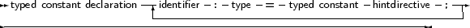
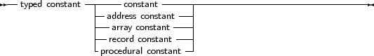

Typed constants serve to provide a program with initialised variables. Contrary to ordinary constants, they may be assigned to at run-time. The difference with normal variables is that their value is initialised when the program starts, whereas normal variables must be initialised explicitly.
_________________________________________________________________________________________________________Typed constant declaration


___________________________________________________________________
Given the declaration:
Const
S : String = ’This is a typed constant string’; |
The following is a valid assignment:
S := ’Result : ’+Func;
|
Where Func is a function that returns a String. Typed constants are often used to initialize arrays and records. For arrays, the initial elements must be specified, surrounded by round brackets, and separated by commas. The number of elements must be exactly the same as the number of elements in the declaration of the type. As an example:
Const
tt : array [1..3] of string[20] = (’ikke’, ’gij’, ’hij’); ti : array [1..3] of Longint = (1,2,3); |
For constant records, each element of the record should be specified, in the form Field: Value, separated by semicolons, and surrounded by round brackets. As an example:
Type
Point = record X,Y : Real end; Const Origin : Point = (X:0.0; Y:0.0); |
The order of the fields in a constant record needs to be the same as in the type declaration, otherwise a compile-time error will occur.
Remark: It should be stressed that typed constants are initialized at program start. This is also true for local typed constants. Local typed constants are also initialized at program start. If their value was changed during previous invocations of the function, they will retain their changed value, i.e. they are not initialized each time the function is invoked.
Remark: Support for typed constants is controlled by the {$J} directive: it can be switched off. Initialized variables are always allowed.